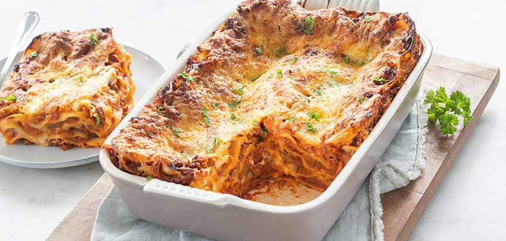

Lasagne

Description
Het traditionele recept voor lasagne bolognese met een kruidige gehaktsaus en een romige bechamelsaus.
- 1 ui
- 2 tenen knoflook
- 2 eetlepels olie
- 200 gr wortel
- 125 gr bleekselderij
- 500 gr rundergehakt
- 1 theelepel oregano
- 1 theelepel tijm
- 1 klein blikje tomatenpuree (à 70 gr)
- 400 ml gezeefde tomaten (blik)
- 400 gr tomatenblokjes (blik)
- 1 blokje runderbouillon
- Snuf peper en zout
- 2 bollen mozzarella
- 12 lasagnebladen
- handje geraspte kaas
Bechamelsaus
- 50 gr boter of margarine
- 60 gr bloem
- 600 ml melk
- Snuf peper en zout
Stappen:
- Verwarm de oven voor op 200° graden.
- Snipper de ui en knoflook. Fruit dit aan in een grote pan met 1 eetlepel olie.
- Snijd de wortel en bleekselderij in kleine stukjes en voeg toe aan de pan.
- Voeg na een paar minuten het gehakt toe en bak mee.
- Voeg de oregano en tijm toe samen met de tomatenpuree.
- Doe dan de tomatenblokjes en gezeefde tomaten erbij en kruimel het bouillonblokje erbij. Laat de saus circa 30 minuten pruttelen.
- Breng de saus eventueel nog extra op smaak met een snufje peper en zout.
- Maak ondertussen de bechamelsaus. Smelt de boter in een pannetje en voeg de bloem toe. Bak deze roux 3 minuutjes zachtjes.
- Giet dan beetje bij beetje de melk erbij en roer met een garde tot een gladde saus. Breng de bechamelsaus op smaak met een beetje peper en zout en eventueel nootmuskaat.
- Snijd de mozzarella in dunne plakjes.
- Vet de ovenschaal in met een beetje olie of boter.
- Giet een klein beetje van de tomatensaus op de bodem. Leg hier 3 lasagnevellen op. Schep hier een beetje tomatensaus op en verdeel hier wat bechamelsaus over. Leg hier een paar plakjes mozzarella op. Dek af met lasagnebladen en herhaal dit tot de ingrediënten op zijn en eindig met een laag tomatensaus, bechamelsaus en mozzarella.
- Bestrooi de lasagne bolognese met de geraspte kaas en zet 45 minuten in de oven.
- Tips: Je hoeft voor deze lasagne de lasagnevellen niet voor te koken. Doe je dit wel dan hoeft hij maar circa 25 minuten in de oven.
- Voor een vegetarische variant vervang je het rundergehakt door vegetarisch gehakt.
Terug